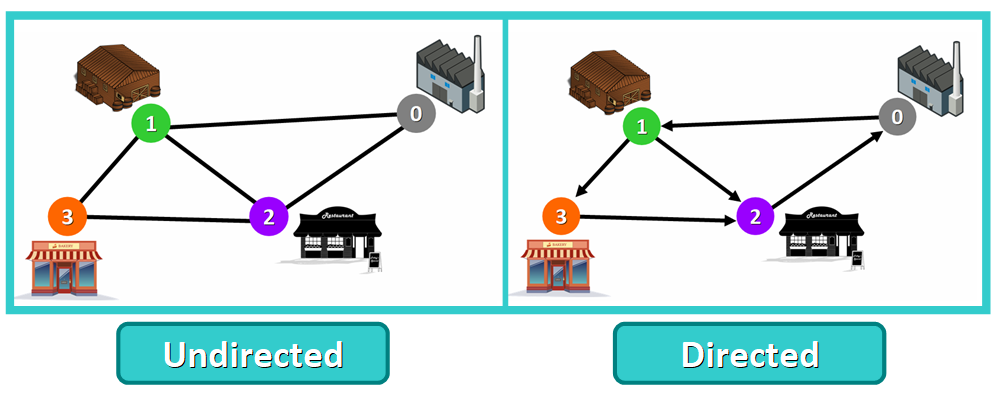

L'algoritmo dei "cammini minimi"
"Ho progettato il tutto senza carta e penna. In questo modo, sei quasi forzato a evitare ogni inutile complessità". Così, in venti minuti, è stato elaborato uno degli algoritmi più importanti dell'informatica: un metodo capace di calcolare il percorso minimo, che sia tra collegamenti informatici che collegamenti stradali.
E' utilizzato dai GPS per calcolare la strada più breve, ma può essere applicato in qualsiasi contesto in cui sia necessario trovare il percorso più breve tra due punti, dati i costi dei collegamenti.
L'algoritmo di Dijkstra è stato inventato da Edsger Dijkstra, informatico olandese, nel 1959.
Formalmente, permette di trovare il cammino minimo tra un nodo sorgente e tutti gli altri nodi in un grafo con pesi non negativi sugli archi.
Nella vita di tutti i giorni, ci permette di selezionare la strada più breve, meno trafficata o consigliata per raggiungere una meta (o una cima!).
Cosa sono i grafi
I grafi sono strutture di dati usate per rappresentare connessioni tra coppie di elementi.
Questi elementi sono detti nodi o vertici, e possono rappresentare oggetti della vita reale, come città, oggetti o persone, mentre le connessioni vengono chiamate archi.
I grafi sono appunto le connessioni tra nodi e archi.
Portando un esempio reale, in una rete di trasporto i nodi rappresentano le strutture che inviano o ricevono dei prodotti e gli archi le strade o i percorsi che le collegano.
I grafi possono essere orientati o non orientati. Sono orientati quando se per ogni coppia di nodi connessi puoi muoverti da un nodo all'altro
soltanto in una verso specifico (in questo caso si usano tfrecce, invece di semplici linee), mentre si definiscono non orientati se per ogni coppia di nodi connessi
puoi andare da un nodo all'altro in entrambi i versi.
Altra distinzione, cruciale per il funzionamento dell'algoritmo di Dijkstra, sono i grafi pesati. Agli archi di questi grafi
è associato un peso o un costo, che può essere una distanza così come un tempo.

L'algoritmo e il suo funzionamento
L'algoritmo di Dijkstra funziona soltanto con grafi che hanno pesi positivi. Questo perché, durante il processo, i pesi degli archi vengono sommati per trovare il cammino minimo.
Se nel grafo è presente un peso negativo, l'algoritmo non funzionerà adeguatamente. Una volta che un nodo viene segnato come "visitato", il percorso attuale per quel nodo viene indicato come il più breve per raggiungerlo. Un peso negativo può alterare il processo se il peso totale viene ridotto dopo questo step.
Il procedimento inizia dal nodo sorgente, quello scelto come punto di partenza, e calcola progressivamente la distanza minima per raggiungere tutti gli altri nodi del grafo.
In particolare, l’algoritmo mantiene per ogni nodo il valore della distanza minima conosciuta dal nodo sorgente. Se viene trovato un percorso più breve, questo valore viene aggiornato.
Quando la distanza minima per un nodo è stata determinata in modo definitivo, quel nodo viene segnato come “visitato” e non viene più modificato.
Il processo prosegue finché tutti i nodi sono stati visitati. Alla fine si ottiene la distanza minima (e il relativo percorso) dal nodo sorgente a ciascun altro nodo del grafo.
Un algoritmo di Dijkstra può essere utilizzato per determinare il percorso più breve o meno impegnativo tra due punti in montagna, come un rifugio e una vetta.